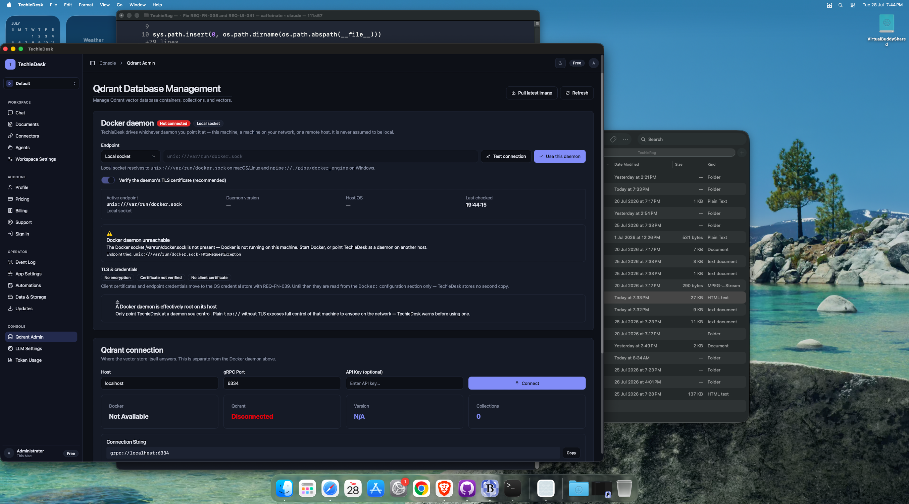
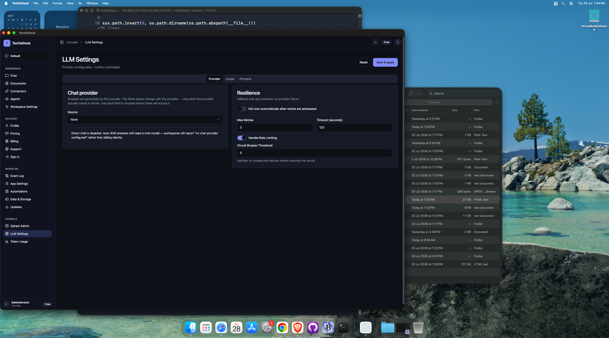
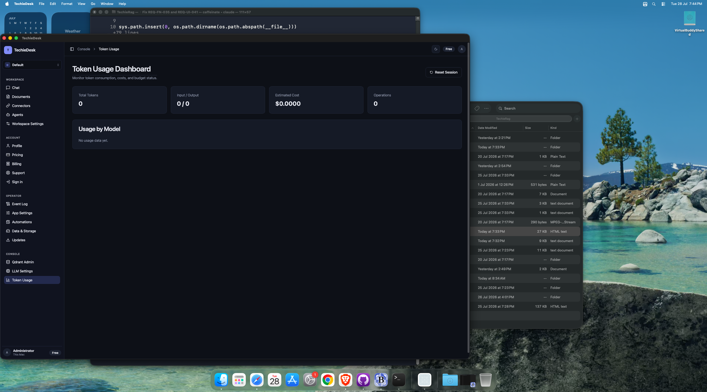
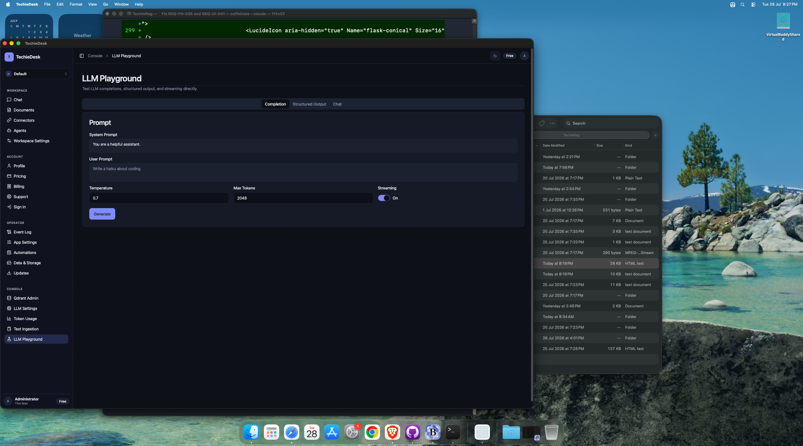
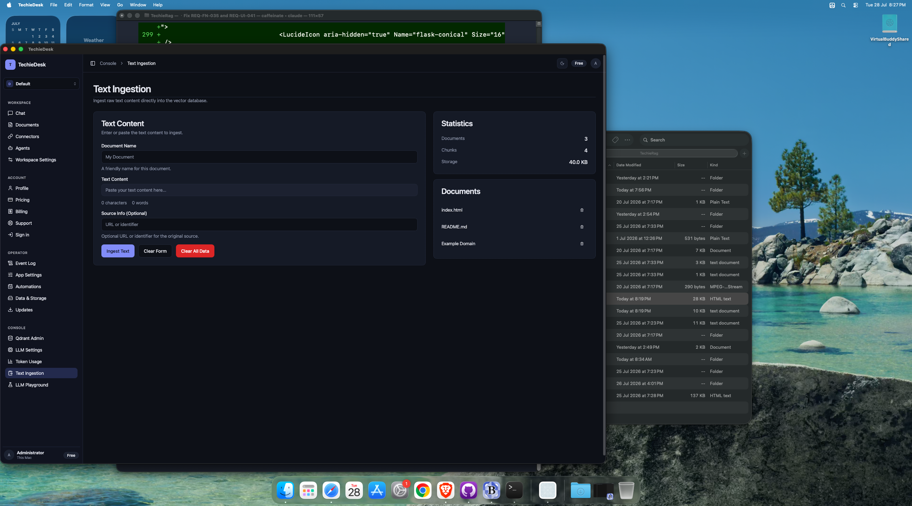
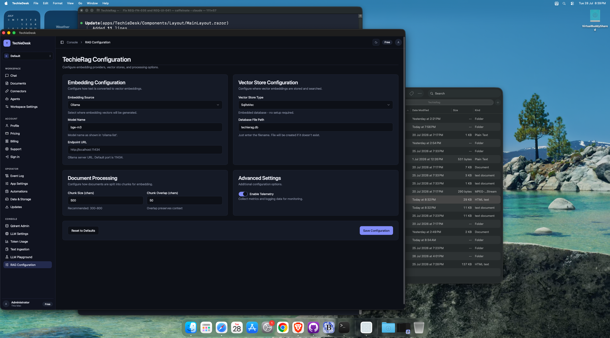

TechieDesk DevGuide — Console
Generated 2026-07-28 · reflects code as built. ← index
✅ Runtime-verified 2026-07-29 — re-swept on the live Mac Catalyst head over Appium (
mac2), bound byappPathto the universal Release bundle, driving 28 of the 30 screens at 1600×1240 and 1024×720 (the REQ-UI-041 floor). EveryObservedline below is what the running app did;Visual (§4b)is the overlap / zero-size / off-viewport geometry check plus a human look at the screenshot. Screens that could not be reached say so and are not claimed as verified. Screenshots:test-results/ui-verify/.
8 screen(s) in this area.
/qdrant-admin — QdrantAdmin#
- File:
apps/TechieDesk/Components/Pages/QdrantAdmin.razor(1169 lines) - Reached via: Sidebar → CONSOLE → Qdrant Admin
- Observed: renders ✓ (runtime-confirmed 2026-07-29) — Docker-daemon card (endpoint-kind Select, address Input, TLS Switch, Test/Use buttons, active-endpoint panel,
Not connectedbadge) and the Qdrant connection card (Host/Port/API key, 4 status tiles, connection string + Copy). Failures render honestly and specifically (“The Docker socket /var/run/docker.sock is not present…”). - Visual (§4b): looks-right ✓ (runtime-confirmed 2026-07-29) — 1600 and 1024: 0 overlaps, 0 zero-size.
- Known issues (2026-07-29): Collection CRUD, point browse/detail and container lifecycle (REQ-UI-003) are behind a live connection and are unreachable on this host — there is no Docker daemon and no Qdrant. This is an environment dependency, not a defect.
- ⚠ Icon defect (TR-032): Icon not found: alert-circle renders as literal text on this screen.

Controls#
| Component | Uses | Razor line(s) |
|---|---|---|
<Button> | 34 | 18, 19, 22, 23… |
<Card> | 13 | 30, 184, 217, 227… |
<LucideIcon> | 12 | 19, 23, 76, 80… |
<Alert> | 9 | 124, 125, 142, 143… |
<Input> | 8 | 68, 194, 200, 206… |
<Badge> | 5 | 35, 40, 153, 156… |
<Dialog> | 4 | 283, 379, 559, 573 |
<DataTable> | 3 | 341, 440, 515 |
<Select> | 2 | 56, 408 |
<Switch> | 1 | 92 |
Data lineage — Razor → injected service#
| Call | Service (as injected) | Razor line(s) |
|---|---|---|
DockerService.ConfigureEndpointAsync() | IDockerContainerService | 807 |
DockerService.CreateQdrantContainerAsync() | IDockerContainerService | 984 |
DockerService.GetActiveEndpointAsync() | IDockerContainerService | 739, 890 |
DockerService.GetContainerLogsAsync() | IDockerContainerService | 842 |
DockerService.ListQdrantContainersAsync() | IDockerContainerService | 898 |
DockerService.PullQdrantImageAsync() | IDockerContainerService | 856 |
DockerService.RestartContainerAsync() | IDockerContainerService | 875 |
DockerService.StartContainerAsync() | IDockerContainerService | 1005 |
DockerService.StopContainerAsync() | IDockerContainerService | 1020 |
DockerService.TestConnectionAsync() | IDockerContainerService | 780, 893 |
JS.InvokeVoidAsync() | IJSRuntime | 964 |
Logger.LogError() | ILogger<QdrantAdmin> | 847, 863, 928 |
Logger.LogWarning() | ILogger<QdrantAdmin> | 793, 946 |
QdrantService.BrowseVectorsAsync() | IQdrantAdminService | 1081, 1094, 1118… |
QdrantService.ConfigureEndpoint() | IQdrantAdminService | 907, 935 |
QdrantService.CreateCollectionAsync() | IQdrantAdminService | 1042 |
QdrantService.DeleteCollectionAsync() | IQdrantAdminService | 1057 |
QdrantService.DeleteVectorAsync() | IQdrantAdminService | 1141 |
QdrantService.GetClusterInfoAsync() | IQdrantAdminService | 917 |
QdrantService.GetCollectionInfoAsync() | IQdrantAdminService | 1077 |
QdrantService.GetVectorByIdAsync() | IQdrantAdminService | 1130 |
QdrantService.ListCollectionsAsync() | IQdrantAdminService | 918 |
QdrantService.TestConnectionAsync() | IQdrantAdminService | 912 |
ToastService.Error() | ToastService | 776, 792, 824… |
ToastService.Show() | ToastService | 816 |
ToastService.Success() | ToastService | 785, 857, 876… |
Injected services: IDockerContainerService, IQdrantAdminService, ToastService, ILogger<QdrantAdmin>, IJSRuntime
Conditional render guards: 14 @if blocks — the render-truth risk on this screen. First few:
@if (daemonTest is { Success: false })(line 122)@if (!string.IsNullOrEmpty(daemonTest.FailureKind))(line 131)@if (!string.IsNullOrEmpty(daemonSecurityWarning))(line 140)
/llm-settings — LlmSettings#
- File:
apps/TechieDesk/Components/Pages/LlmSettings.razor(689 lines) - Reached via: Sidebar → CONSOLE → LLM Settings
- Observed: renders ✓ (runtime-confirmed 2026-07-29) — all three tabs driven. Provider: Source Select with 7 providers plus the Resilience card. Usage: token-tracking Switch, Max total tokens, Max cost, the alert-threshold Slider and
Block Requests When Exceeded. Prompts: system prompt, RAG and context templates, context limits. - Visual (§4b): looks-right ✓ (runtime-confirmed 2026-07-29) — 1600 and 1024: 0 overlaps, 0 zero-size on every tab.
- Known issues (2026-07-29): ✅ REQ-UI-043 proven end-to-end. Selecting
OpenAI-compatible endpointswapped the visible field set (Base URL / Model / API key / Max tokens / Temperature / Test connection) — no union-of-all-providers form — andSave & applywas refused with the error named on each offending field (Base URL required,Model required,API key required) plus aThis provider is not fully configuredsummary. The named regression (saving OpenAI-compatible with no endpoint) is prevented. Configuration was restored toNoneafterwards.

Controls#
| Component | Uses | Razor line(s) |
|---|---|---|
<Input> | 12 | 117, 123, 134, 163… |
<Card> | 4 | 65, 95, 145, 191 |
<Separator> | 4 | 79, 108, 112, 158 |
<Switch> | 4 | 102, 128, 152, 182 |
<Label> | 4 | 103, 129, 153, 183 |
<Button> | 3 | 16, 17, 80 |
<Spinner> | 3 | 18, 27, 81 |
<Alert> | 3 | 38, 86, 380 |
<Slider> | 2 | 177, 485 |
<Textarea> | 2 | 200, 206 |
<Tabs> | 1 | 56 |
<Select> | 1 | 362 |
Data lineage — Razor → injected service#
| Call | Service (as injected) | Razor line(s) |
|---|---|---|
ConfigService.LoadConfigAsync() | TechieRagConfigService | 301 |
ConfigService.SaveConfigAsync() | TechieRagConfigService | 574, 618 |
Logger.LogError() | ILogger<LlmSettings> | 310, 592, 625… |
Logger.LogInformation() | ILogger<LlmSettings> | 569, 576, 620… |
Logger.LogWarning() | ILogger<LlmSettings> | 558, 587, 646… |
RagManager.GetLlmProviderAsync() | TechieRagManager | 643 |
RagManager.ReconfigureAsync() | TechieRagManager | 575, 619 |
ToastService.Error() | ToastService | 311, 561, 588… |
ToastService.Success() | ToastService | 577, 621, 666 |
Injected services: TechieRagConfigService, TechieRagManager, ToastService, ILogger<LlmSettings>
Conditional render guards: 19 @if blocks — the render-truth risk on this screen. First few:
@if (isSaving) { <Spinner Size="SpinnerSize.Small" Class="mr-2" /> <span>Saving...</span> }(line 18)@if (isLoading)(line 24)@if (validationSummary.Count > 0)(line 32)
/token-usage — TokenUsage#
- File:
apps/TechieDesk/Components/Pages/TokenUsage.razor(183 lines) - Reached via: Sidebar → CONSOLE → Token Usage
- Observed: renders ✓ (runtime-confirmed 2026-07-29) — 4 stat tiles populated (Total tokens, Input/Output, Estimated cost, Operations),
Usage by Modelwith a labelled empty state,Reset Session. Budget Status proven: setting a budget on/llm-settings→ Usage made the card appear with both<Progress>bars (Token budget used,Cost budget used) and correct0 / 10,000and$0.0000 / $5.00values. - Visual (§4b): looks-right ✓ (runtime-confirmed 2026-07-29) — 1600 and 1024: 0 overlaps, 0 zero-size, with and without the Budget Status card.
- Known issues (2026-07-29): The Budget Status card is correctly conditional, not renders-empty: it appears only once a budget is configured. Budgets were reverted to 0 after the check. Block-on-exceed enforcement needs a live provider and is unexercised.

Controls#
| Component | Uses | Razor line(s) |
|---|---|---|
<Card> | 6 | 24, 32, 40, 48… |
<Button> | 2 | 16, 17 |
<Progress> | 2 | 73, 84 |
<Alert> | 2 | 90, 97 |
<LucideIcon> | 1 | 17 |
<DataTable> | 1 | 118 |
Data lineage — Razor → injected service#
| Call | Service (as injected) | Razor line(s) |
|---|---|---|
TechieRag.GetTokenTrackerAsync() | TechieDesk.Services.TechieRagManager | 141 |
ToastService.Success() | ToastService | 173 |
Injected services: TechieDesk.Services.TechieRagManager, ToastService
Conditional render guards: 5 @if blocks — the render-truth risk on this screen. First few:
@if (budgetStatus != null)(line 59)@if (budgetStatus.Budget.MaxTotalTokens > 0)(line 66)@if (budgetStatus.Budget.MaxCostUsd > 0)(line 77)
/llm-playground — LlmPlayground#
- File:
apps/TechieDesk/Components/Pages/LlmPlayground.razor(395 lines) - Reached via: Sidebar → CONSOLE → LLM Playground (re-linked 2026-07-28)
- Observed: renders ✓ (runtime-confirmed 2026-07-29) — 3 tabs (Completion / Structured Output / Chat), system and user prompt Textareas, Temperature, Max tokens, Streaming Switch,
Generate. - Visual (§4b): looks-right ✓ (runtime-confirmed 2026-07-29) — 1600 and 1024: 0 overlaps, 0 zero-size.
- Known issues (2026-07-29): Generation is unexercised — no LLM provider is reachable on this host.

Controls#
| Component | Uses | Razor line(s) |
|---|---|---|
<Card> | 5 | 26, 75, 94, 128… |
<Textarea> | 4 | 34, 40, 102, 168 |
<Button> | 4 | 66, 119, 146, 169 |
<Input> | 2 | 47, 53 |
<Spinner> | 2 | 67, 120 |
<Tabs> | 1 | 16 |
<Switch> | 1 | 60 |
<Label> | 1 | 61 |
<Select> | 1 | 108 |
<LucideIcon> | 1 | 170 |
Data lineage — Razor → injected service#
| Call | Service (as injected) | Razor line(s) |
|---|---|---|
TechieRag.GetLlmProviderAsync() | TechieDesk.Services.TechieRagManager | 198 |
ToastService.Error() | ToastService | 200 |
Injected services: TechieDesk.Services.TechieRagManager, ToastService
Conditional render guards: 6 @if blocks — the render-truth risk on this screen. First few:
@if (isGenerating) { <Spinner Size="SpinnerSize.Small" Class="mr-2" /> <span>Generating...</span> }(line 67)@if (!string.IsNullOrEmpty(completionResponse))(line 73)@if (!string.IsNullOrEmpty(completionStats))(line 81)
/ingestion — Ingestion#
- File:
apps/TechieDesk/Components/Pages/Ingestion.razor(515 lines) - Reached via: native Go menu, "Document Ingestion" ⌘3 (MainPage.xaml.cs:81)
- ⚠ Not in the sidebar — reachable only from the native Go menu, "Document Ingestion" ⌘3 (MainPage.xaml.cs:81).
- Observed: renders ✓ (runtime-confirmed 2026-07-29) — now observed (was
not observedon 2026-07-28). Driven through the native Go menu → Document Ingestion ⌘3. Folder-path and pattern Inputs,Choose files…/Choose folder…,Ingest Now, a Vector-store statistics card (12 documents / 13 chunks / 100.0 KB / last ingestion) and anIngested Documentstable with 12 rows across 3 pages. - Visual (§4b): looks-right ✓ (runtime-confirmed 2026-07-29) — 1600 and 1024: 0 overlaps, 0 zero-size.
- Known issues (2026-07-29): This screen's
Storage Sizecolumn does show real byte sizes, unlike the workspace document library — the two read different stores.
Controls#
| Component | Uses | Razor line(s) |
|---|---|---|
<Button> | 6 | 46, 50, 73, 79… |
<Card> | 4 | 36, 101, 126, 153 |
<Alert> | 2 | 21, 22 |
<Spinner> | 2 | 22, 74 |
<Progress> | 2 | 26, 91 |
<LucideIcon> | 2 | 47, 51 |
<Input> | 2 | 59, 67 |
<DataTable> | 2 | 110, 165 |
Data lineage — Razor → injected service#
| Call | Service (as injected) | Razor line(s) |
|---|---|---|
Logger.LogError() | ILogger<Ingestion> | 220, 266, 295… |
Rag.ClearAsync() | ITechieRag | 462 |
Rag.DeleteDocumentAsync() | ITechieRag | 478 |
Rag.GetStatsAsync() | ITechieRag | 491 |
Rag.IngestAsync() | ITechieRag | 415 |
Rag.InitializeAsync() | ITechieRag | 213 |
Rag.ListDocumentsAsync() | ITechieRag | 496 |
ToastService.Error() | ToastService | 221, 267, 276… |
ToastService.Success() | ToastService | 436, 466, 481 |
Injected services: ITechieRag, ToastService, ILogger<Ingestion>
Conditional render guards: 7 @if blocks — the render-truth risk on this screen. First few:
@if (isDownloadingModel)(line 19)@if (isIngesting) { <Spinner Size="SpinnerSize.Small" Class="mr-2" /> <span>Ingesting...</span> }(line 74)@if (isIngesting)(line 77)
/text-ingestion — TextIngestion#
- File:
apps/TechieDesk/Components/Pages/TextIngestion.razor(325 lines) - Reached via: Sidebar → CONSOLE → Text Ingestion (re-linked 2026-07-28)
- Observed: renders ✓ (runtime-confirmed 2026-07-29) — Document-name Input, content Textarea with a live character/word counter, source Input,
Ingest Text/Clear Form/Clear All Data, a Statistics card with real values and a Documents list with per-row delete. - Visual (§4b): looks-right ✓ (runtime-confirmed 2026-07-29) — 1600 and 1024: 0 overlaps, 0 zero-size.

Controls#
| Component | Uses | Razor line(s) |
|---|---|---|
<Button> | 4 | 71, 75, 76, 135 |
<Card> | 3 | 37, 94, 117 |
<Alert> | 2 | 20, 21 |
<Spinner> | 2 | 21, 72 |
<Progress> | 2 | 25, 82 |
<Input> | 2 | 46, 65 |
<Textarea> | 1 | 54 |
<LucideIcon> | 1 | 136 |
Data lineage — Razor → injected service#
| Call | Service (as injected) | Razor line(s) |
|---|---|---|
Logger.LogError() | ILogger<TextIngestion> | 176, 259 |
Rag.ClearAsync() | ITechieRag | 273 |
Rag.DeleteDocumentAsync() | ITechieRag | 288 |
Rag.GetStatsAsync() | ITechieRag | 301 |
Rag.IngestTextAsync() | ITechieRag | 245 |
Rag.InitializeAsync() | ITechieRag | 169 |
Rag.ListDocumentsAsync() | ITechieRag | 306 |
ToastService.Error() | ToastService | 177, 210, 216… |
ToastService.Success() | ToastService | 249, 276, 291 |
Injected services: ITechieRag, ToastService, ILogger<TextIngestion>
Conditional render guards: 5 @if blocks — the render-truth risk on this screen. First few:
@if (isDownloadingModel)(line 18)@if (isIngesting) { <Spinner Size="SpinnerSize.Small" Class="mr-2" /> <span>Ingesting...</span> }(line 72)@if (isIngesting)(line 79)
/chat — Chat#
- File:
apps/TechieDesk/Components/Pages/Chat.razor(410 lines) - Reached via: native Go menu, "RAG Chat" ⌘2 (MainPage.xaml.cs:80)
- ⚠ Not in the sidebar — reachable only from the native Go menu, "RAG Chat" ⌘2 (MainPage.xaml.cs:80).
- Observed: renders ✓ (runtime-confirmed 2026-07-29) — now observed (was
not observedon 2026-07-28). Driven through the native Go menu → RAG Chat ⌘2. Chat-configuration card (Mode, Doc filter, Top-K, Streaming), session counters, message Input andNew Conversation/Clear Chat. - Visual (§4b): looks-right ✓ (runtime-confirmed 2026-07-29) — 1600 and 1024: 0 overlaps, 0 zero-size.
- Known issues (2026-07-29): Answering is unexercised — no LLM provider is reachable.
Controls#
| Component | Uses | Razor line(s) |
|---|---|---|
<LucideIcon> | 7 | 19, 23, 34, 36… |
<Button> | 5 | 18, 19, 22, 23… |
<Card> | 2 | 31, 92 |
<Select> | 2 | 45, 59 |
<Input> | 1 | 73 |
<Switch> | 1 | 80 |
<Label> | 1 | 81 |
<Badge> | 1 | 122 |
<Spinner> | 1 | 145 |
<Textarea> | 1 | 157 |
Data lineage — Razor → injected service#
| Call | Service (as injected) | Razor line(s) |
|---|---|---|
Logger.LogError() | ILogger<Chat> | 227 |
Logger.LogWarning() | ILogger<Chat> | 364 |
TechieRag.AskAsync() | TechieDesk.Services.TechieRagManager | 320 |
TechieRag.GetLlmProviderAsync() | TechieDesk.Services.TechieRagManager | 252, 296 |
TechieRag.GetTokenTrackerAsync() | TechieDesk.Services.TechieRagManager | 261, 306, 357 |
TechieRag.SearchAsync() | TechieDesk.Services.TechieRagManager | 240, 293 |
Injected services: TechieDesk.Services.TechieRagManager, ToastService, ILogger<Chat>
Conditional render guards: 4 @if blocks — the render-truth risk on this screen. First few:
@if (messages.Count == 0)(line 94)@if (msg.Role == "assistant" && msg.Sources?.Count > 0)(line 110)@if (isProcessing)(line 134)
/rag-config — RagConfig#
- File:
apps/TechieDesk/Components/Pages/RagConfig.razor(409 lines) - Reached via: Sidebar → CONSOLE → RAG Configuration (renamed from /settings 2026-07-28)
- Observed: renders ✓ (runtime-confirmed 2026-07-29) — Embedding configuration (Source
Ollama, modelbge-m3, endpoint), Vector store (SqliteVec,techierag.db), Document processing (chunk size 500 / overlap 50), Advanced settings (telemetry Switch),Reset to Defaults/Save Configuration. - Visual (§4b): looks-right ✓ (runtime-confirmed 2026-07-29) — 1600 and 1024: 0 overlaps, 0 zero-size.

Controls#
| Component | Uses | Razor line(s) |
|---|---|---|
<Input> | 8 | 72, 83, 93, 104… |
<Card> | 5 | 34, 113, 157, 183… |
<Spinner> | 2 | 27, 207 |
<Select> | 2 | 43, 122 |
<Button> | 2 | 201, 204 |
<Alert> | 1 | 62 |
<Switch> | 1 | 190 |
<Label> | 1 | 191 |
Data lineage — Razor → injected service#
| Call | Service (as injected) | Razor line(s) |
|---|---|---|
ConfigService.LoadConfigAsync() | TechieRagConfigService | 254, 335 |
ConfigService.ResetToDefaults() | TechieRagConfigService | 334 |
ConfigService.SaveConfigAsync() | TechieRagConfigService | 317 |
Logger.LogError() | ILogger<RagConfig> | 259, 323 |
RagManager.ReconfigureAsync() | TechieRagManager | 318 |
ToastService.Error() | ToastService | 260, 324 |
ToastService.Success() | ToastService | 319, 336 |
Injected services: TechieRagConfigService, TechieRagManager, ToastService, ILogger<RagConfig>
Conditional render guards: 6 @if blocks — the render-truth risk on this screen. First few:
@if (isLoading)(line 24)@if (config.Embedding.Source == EmbeddingSource.Embedded)(line 60)@if (config.Embedding.Source == EmbeddingSource.Onnx)(line 78)